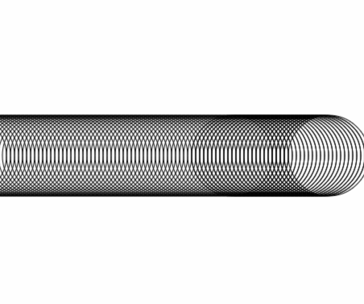

Javascript is a legitimate way for creating visuals for the web.
Programming can be a great tool for art and design on the web and beyond.
Frameworks we're going to look at
- p5.js
- Raphael.js
- D3.js
- three.js
Why use Javascript?
"This site requires [THIRD-PARTY] plug-in"
You probably already know the right amount of Javascript
take advantage of the interactivity and extensibility of javascript
Better developer quality of life
HTML5 <canvas>
Let's draw a circle
write your mark-up
reference canvas and set context
var width = 500;
var height = 400;
var canvas=document.getElementById("canvas");
var ctx=canvas.getContext("2d");
draw our circle
ctx.beginPath();
ctx.arc(xPos,height/2,50,0,2*Math.PI);
ctx.stroke();
let's animate the circle
set initial properties
var xPos = 0;
var direction = 1;
var speed = 5;
create draw function
var draw = function(){
ctx.clearRect(0,0,width,height);
ctx.beginPath();
ctx.arc(xPos,height/2,50,0,2*Math.PI);
ctx.stroke();
xPos=xPos+direction*speed;
if (xPos===450) {
direction=-1;
}
if (xPos===50) {
direction=1;
}
window.requestAnimationFrame(draw);
}
Final Code
var xPos = 0;
var direction = 1;
var speed = 5;
var width = 500;
var height = 400;
var canvas=document.getElementById("canvas");
var ctx=canvas.getContext("2d");
var draw = function(){
ctx.clearRect(0,0,width,height);
ctx.beginPath();
ctx.arc(xPos,height/2,50,0,2*Math.PI);
ctx.stroke();
xPos=xPos+direction*speed;
if (xPos===450) {
direction=-1;
}
if (xPos===50) {
direction=1;
};
window.requestAnimationFrame(draw);
};
window.requestAnimationFrame(draw);
"oops"
Why use a framework?
- synatic sugar
- code organization
- developer quality of life!
drawing with p5.js
"a software sketchbook"
flocking behavior (in javascript!)
a programming language for artists.
a way of making art for programmers.
accessibility
ellipse() vs context.arc()
setup()
function setup(){
//runs once
}
draw()
function draw(){
//runs continuously
}
Let's draw our circle again
function setup() {
createCanvas(500, 400);
background(255);
ellipse(0, 200, 50, 50);
}
let's animate our circle
create some variables
var xPos = 0;
var direction = 1;
var speed = 5;
var width = 500;
var height = 400;
refactor the setup() function
function setup() {
createCanvas(width, height);
background(255);
}
create the draw function
function draw(){
background(255);
ellipse(xPos, height/2, 50, 50);
xPos=xPos+direction*speed;
if (xPos===500) {
direction=-1;
}
if (xPos===0) {
direction=1;
};
}
particle systems
ParticleSystem object
var ParticleSystem = function(position) {
this.origin = position.get();
this.particles = [];
};
Add particles
function setup() {
createCanvas(720, 400);
system = new ParticleSystem(createVector(width/2, 50));
}
function draw() {
background(51);
system.addParticle();
system.run();
}
//...
ParticleSystem.prototype.addParticle = function() {
this.particles.push(new Particle(this.origin));
};
Particle object
var Particle = function(position) {
this.acceleration = createVector(0, 0.05);
this.velocity = createVector(random(-1, 1), random(-1, 0));
this.position = position.get();
this.lifespan = 255.0;
};
Extend particle object
Particle.prototype.run = function() {
this.update();
this.display();
};
Particle.prototype.update = function(){
...
};
Particle.prototype.display = function() {
...
};
Particle.prototype.isDead = function(){
...
};
Event handlers
handlers are their own functions
function mouseClicked(){
//...
}
Weave
Example: mouse dragged
function detectQuad(){
background(255,255,255,5);
stroke(random(255),0,random(255),random(100,255));
line(0,0,mouseX,mouseY);
line(0,_height,mouseX,mouseY);
line(_width,0,mouseX,mouseY);
line(_width,_height,mouseX,mouseY);
}
function mouseDragged(){
detectQuad();
}
Raphael.js
javascript library for vector graphics
SVG
- XML
- math data versus pixel data
- exist in the DOM
Differences from P5.js
- SVG instead of canvas
- animate() instead of function draw(){}
let's draw our circle (for the third time)
intialize raphael
var canvas = document.getElementById('canvas');
var paper = Raphael(canvas, 500, 400);draw the circle
var circle = paper.circle(0, 200, 50);
circle.attr("fill", "#fff");
circle.attr("stroke", "#000");Let's animate our circle again
animate the circle
var left = function(){
circle.animate({cx: 0}, 2000, 'linear',right);
};
var right = function(){
circle.animate({cx: 500}, 2000, 'linear',left);
};
right();
.animate()
D3.js
"data-driven documents"
Citibike explorer
Measles Outbreak
Hip Hop Almanac
http://www.moma.org/interactives/exhibitions/2011/talktome/objects/146253/
a big toolbox for making data visualizations and infographics
- data import and parsing
- generating color palettes
- animation
- map building
- time parasing
- built-in infographic layouts
SVG
import data
d3.csv(...); //load external csv
d3.csv.parse(...); //parse string as csv
d3.json(...) //load external csv
exploratory statistics
var data = [1,2,3,4,5];
d3.max(data) // returns 5
d3.mean(data) // returns 3
Data sorting
var data = [1,2,3,4,5];
d3.descending(data) // returns [5,4,3,2,1]
let's make a bar graph
initialize data
var data = [
{"day":"Monday","count":3},
{"day":"Tuesday","count":5},
{"day":"Wednesday","count":9},
{"day":"Thursay","count":2}
];
var values = data.map(function(val){
return val.count;
})
map data to pixels
var calcHeight = d3.scale.linear()
.domain([0, d3.max(values)])
.range([0, chartHeight]);
initialize bars
var chart = d3.select("#canvas")
.attr("width", chartWidth)
.attr("height", chartHeight);
var bar = chart.selectAll("g")
.data(data)
.enter()
.append("g");
map data to bars
bar
.append("rect")
.attr("x",function(d, i) {
return i * 25 + 50; //Bar width of 20 plus 1 for padding
})
.attr("y",function(d){
return chartHeight - calcHeight(d.count);
})
.attr("width", 20)
.attr("height",function(d){
if (d.count>5) {
console.log(typeof this);
};
return calcHeight(d.count)
});
label values
bar
.append("text")
.attr("x", function(d, i) { return i * 28 + 50; })
.attr("y", function(d){return chartHeight-calcHeight(d.count)+10;})
.attr("dy", ".35em")
.attr("fill","#FFF")
.text(function(d) { return d.count; });
create axis
var yAxisScale = d3.scale.linear()
.domain([0, d3.max(values)])
.range([chartHeight, d3.max(values)]);
var yAxis = d3.svg.axis();
yAxis
.scale(yAxisScale)
.orient("left")
.ticks(10);
chart
.append("g")
.attr('transform', 'translate(20,0)')
.call(yAxis)
.attr("class","axis");
Making a pie graph
http://chimera.labs.oreilly.com/books/1230000000345/ch11.html#_pie_layout
layouts
e.g. pie graph
arcs.append("path")
.attr("fill", function(d, i) {
return color(i);
})
.attr("d", arc);
//Labels
arcs.append("text")
.attr("transform", function(d) {
return "translate(" + arc.centroid(d) + ")";
})
.attr("text-anchor", "middle")
.text(function(d) {
return d.value;
});Three.js
"makes webGL simpler"
Beauty Breakup
Lights
Three.js Example
three.js: toolbox for 3D using javascript
- geometry
- lighting
- animation
- postprocessing
let's create a cube
initialize
function init() {
renderer = new THREE.WebGLRenderer();
renderer.setPixelRatio( window.devicePixelRatio );
renderer.setSize( window.innerWidth, window.innerHeight );
document.body.appendChild( renderer.domElement );
//...
scene = new THREE.Scene();
}
create camera
camera = new THREE.PerspectiveCamera( 70, window.innerWidth / window.innerHeight, 1, 1000 );
camera.position.z = 400;
create cube
var geometry = new THREE.BoxGeometry( 200, 200, 200 );
var texture = THREE.ImageUtils.loadTexture( 'textures/crate.gif' );
texture.anisotropy = renderer.getMaxAnisotropy();
var material = new THREE.MeshBasicMaterial( { map: texture } );
mesh = new THREE.Mesh( geometry, material );
scene.add( mesh );
animate cube
function animate() {
requestAnimationFrame( animate );
mesh.rotation.x += 0.005;
mesh.rotation.y += 0.01;
renderer.render( scene, camera );
}
beauty breakup
initialize lights
function spotlight(e,t,n){var r=new THREE.DirectionalLight(16777215);r.position.x=e,r.position.y=t,r.position.z=n,scene.addLight(r)}function ambientWhite(){scene.addLight(new THREE.AmbientLight(16777215))}function colorLights(){light1=new THREE.PointLight(16711744),scene.addLight(light1),light2=new THREE.PointLight(16639),scene.addLight(light2),light3=new THREE.PointLight(16774228),scene.addLight(light3)}function animateColorLights(){var e=(new Date).getTime()*5e-4;light2.position.z=600,light1.position.x=10+Math.sin(e*.7)*800,light1.position.y=50+Math.cos(e*.5)*800,light1.position.z=130+Math.cos(e*.3)*lightDist,light2.position.x=-400+Math.cos(e*.3)*400,light2.position.y=-400+Math.sin(e*.5)*400,light2.position.z=lightDist+Math.sin(e*.7),light3.position.x=-100+Math.sin(e*.7)*200,light3.position.y=200+Math.cos(e*.3)*200,light3.position.z=Math.sin(e*.5)*lightDist}var light1,light2,light3;
create reflection
var ReflectionUrls = ["images/r_py.jpg", "images/r_py.jpg",
"images/r_px.jpg","images/r_px.jpg",
"images/r_pz.jpg", "images/r_pz.jpg" ];
var reflectionTexture =
THREE.ImageUtils.loadTextureCube( ReflectionUrls );
var mirrorMaterial = new THREE.MeshPhongMaterial({
color: 0xeeeeee,
specular: 0xFFF896,
envMap: reflectionTexture,
shininess: 100,
reflectivity:100,
shading: THREE.SmoothShading});
generate mirror pieces
animate mirror pieces
shaders
postprocessing effects
"Why can't I see anything?"
- no camera
- no lighting
- wrong zoom level
- weak GPU
conclusion
javascript = more than one way to do something
DON'T ATTEMPT TO MAKE ANOTHER FRAMEWORK
(unless you really need to or it's an academic exercise but you probably don't need to make your own framework)
Thanks
Amy Cheng
amy (at) amycheng.info
@am3thyst